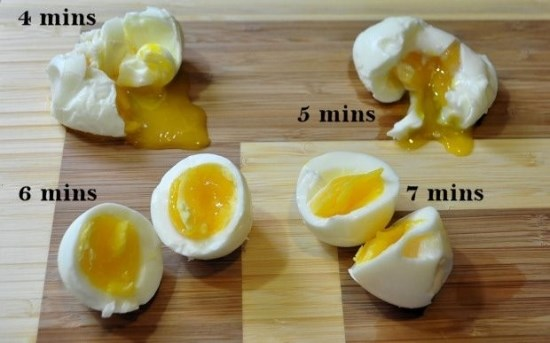
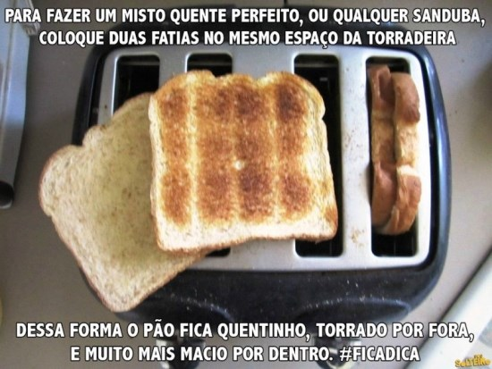

Para que a pizza requentada no micro-ondas não fique “borrachenta”, coloque um copo de água junto ao prato quando for aquecer a fatia.

Ponto do ovo
Nunca mais erre no ponto dos ovos cozidos!

Misto Quente
Para fazer um misto perfeito, coloque duas fatias de pão no mesmo espaço da torradeira. Dessa forma o pão fica quentinho, torrado por fora e muito mais macio por dentro.